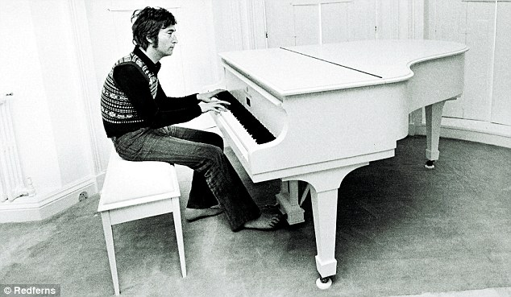
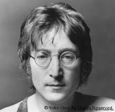
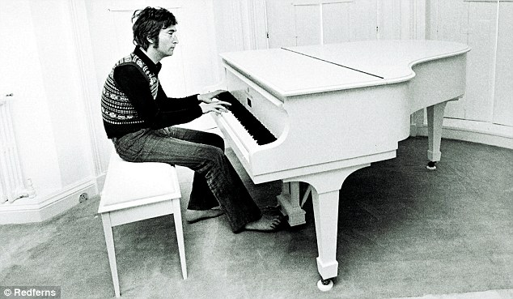
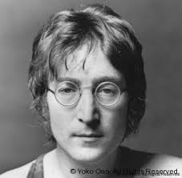

Home | John Lennon | George Harrison | Ringo Starr | Paul McCartney | Discography | Other Beatles members | Discography Selections
 



Quoted by John Lennon:
"I believe in everything until it's disproved. So I believe in fairies, the myths, dragons. It all exists, even if it's in your mind. Who's to say that dreams and nightmares aren't as real as the here and now?"